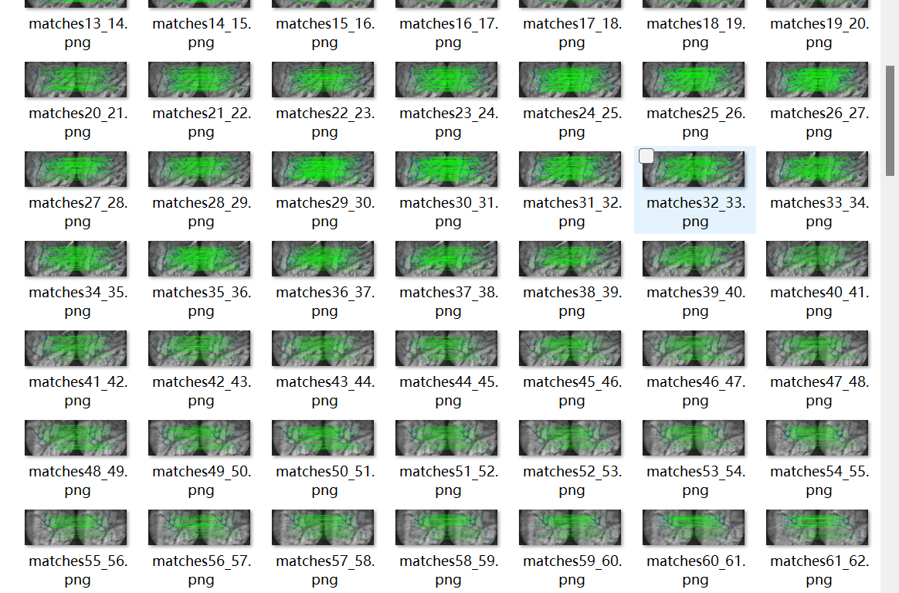
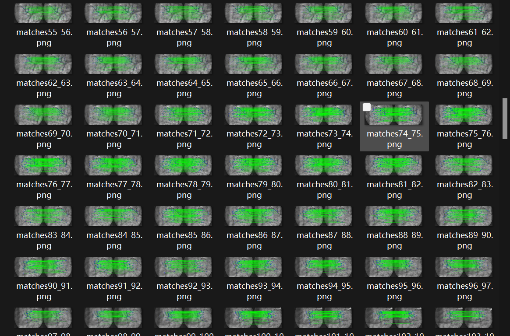
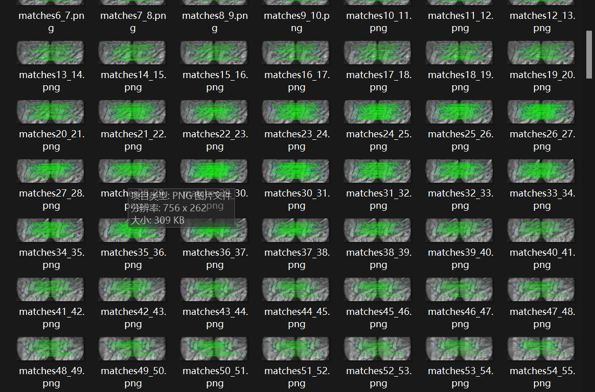
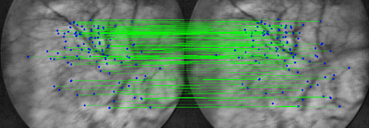
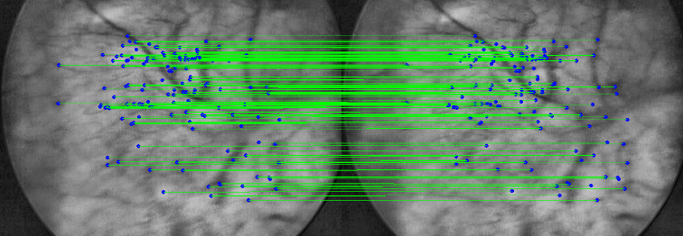
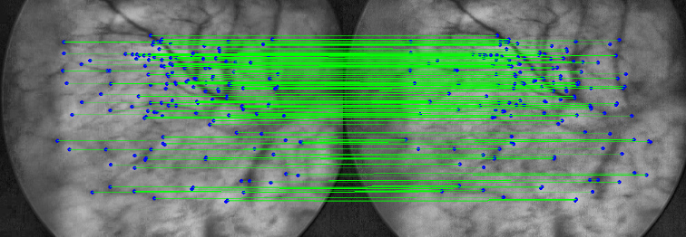

目录
按照所给代码框架，将 Self-supervised endoscopic image key-points matching代码改写为我们自己的框架结构。
xxxxxxxxxx711D:.2│ main.py3│4├─.idea5│ │ .gitignore6│ │ misc.xml7│ │ modules.xml8│ │ my_project.iml9│ │ workspace.xml10│ │11│ └─inspectionProfiles12│ profiles_settings.xml13│ Project_Default.xml14│15├─configs16│ │ config_loader.py17│ │18│ └─__pycache__19│ config_loader.cpython-39.pyc20│21├─data22│ test_dataset.zip23│ train_dataset.zip24│25├─output26│ │ HardNet128.pth27│ │28│ └─HardNet12829├─part1_data30│ │ dataLoader.py31│ │ run_generate_triplet_dataset.py32│ │33│ └─__pycache__34│ dataLoader.cpython-39.pyc35│36├─part2_model37│ │ arch_factory.py38│ │39│ ├─loss40│ │ │ loss.py41│ │ │ triplet_loss_layers.py42│ │ │43│ │ └─__pycache__44│ │ triplet_loss_layers.cpython-39.pyc45│ │46│ ├─models47│ │ │ hardnet_model.py48│ │ │ hynet_model.py49│ │ │ sosnet_model.py50│ │ │51│ │ └─__pycache__52│ │ hardnet_model.cpython-39.pyc53│ │54│ ├─train_model55│ │ │ train_model.py56│ │ │57│ │ └─__pycache__58│ │ train_model.cpython-39.pyc59│ │60│ └─__pycache__61├─part3_train62│ run_training.py63│64├─part4_test65│ run_matching_demo.py66│ run_validation.py67│68└─utils69image_keypoints_extractors.py70matcher.py71path.py
config_loader.py: 定义和解析配置参数
定义了一个配置解析器，用于解析项目的各种参数。这些参数控制着训练、匹配演示等不同阶段的行为。可以通过修改这些参数来自定义项目的行为。
dataLoader.py: 定义了两个数据集类：TripletDataset和PatchDataset。
TripletDataset:
这个类用于加载包含三元组样本的数据集。每个样本包含一个锚点图像、一个正例图像和一个负例图像。锚点和正例是同一场景的不同视角，而负例是另一场景。数据集的目录结构应该按照每个场景存储，并且每个场景下有三个图像：锚点（以"a"开头）、正例（以"p"开头）和负例（以"n"开头）。类提供了对数据集的索引、加载和图像变换等功能。
PatchDataset:
这个类用于加载稀疏对应关系数据集，通常用于特征匹配等任务。它从文件中加载场景的所有匹配，并生成用于训练的图像块。每个样本包含源图像、目标图像、源图像块、目标图像块、源图像关键点和目标图像关键点。这个数据集假定数据集的目录结构是按场景存储的，每个场景都包含一个matches目录，其中包含所有场景的匹配文件。脚本还提供了一个简单的图像增强函数enhance，用于对输入图像进行预处理。
run_generate_triplet_dataset.py
生成用于训练图像匹配模型的训练数据。每个三元组包括一个锚点图像、一个正例图像和一个负例图像，其中锚点和正例图像来自同一场景，而负例图像来自另一场景。这样的数据有助于模型学习对图像中的特征进行匹配。
hardnet_model.py
一个包含 HardNet128 模型的模块. 定义了 HardNet128 模型结构，包括特征提取部分和一些辅助方法，如输入归一化和权重初始化。此外，还包含 L2 范数归一化的模块。
train_model.py:
使用 HardNet128 模型在给定数据集上进行训练, 从配置文件中获取训练所需的参数。它创建了一个 HardNet128 模型和一个数据加载器，并使用 Trainer 类进行模型训练。
run_matching_demo.py:
用于评估模型在给定数据集上的性能，并将结果以GIF的形式可视化展示。 加载一个预训练的模型，并在测试数据集上执行特征匹配。匹配的结果通过可视化展示为GIF。输出的GIF和匹配图像将保存在指定的输出目录中。
run_validation.py:
评估模型性能，然后计算一些匹配度量。加载模型，然后对验证数据集上的图像进行匹配，并计算匹配度量，如精度和匹配分数。结果保存在 precision 和 matching_score 列表中。
xxxxxxxxxx2661import numpy as np2
3import torch4import os5import cv2 as cv6from torch.utils.data import Dataset #???7from scipy.spatial import distance8from numpy import loadtxt9import glob10
11import torch.utils.data as data12import os.path as osp13
14import sys15from PIL import Image16from torchvision import transforms17
18sys.path.append("../")19supported_image_ext = [".png", ".bmp", ".jpg", ".jpeg"]20labels = []21
22class TripletDataset(data.Dataset):23 """24 初始化TripletDataset对象。25
26 参数：27 - root: 数据集根目录的路径28 - image_size: 图像的大小，用于裁剪图像29 - shuffle: 是否在加载数据时对数据进行随机打乱30 - use_cache: 是否使用缓存31
32 属性：33 - root: 数据集根目录的路径34 - list: 数据集文件列表35 - nb_samples: 数据集样本数量36 - phase: 数据集阶段37 - transform: 是否进行图像变换38 - image_size: 图像的大小，用于裁剪图像39 """40 def __init__(self, root, image_size, shuffle=False, use_cache=True):41 self.root = root42 self.list = self.get_file_list()43 self.nb_samples = len(self.list)44 self.phase = 045 self.transform = True46 self.image_size = image_size47
48 def get_file_list(self):49 """50 获取数据集文件列表。51
52 返回：53 - local_list: 数据集文件列表54 """55 local_list = []56 folder_list = glob.glob(self.root + "/*")57
58 for d in folder_list:59 bOk = True60 image_list = glob.glob(d + "/*")61
62 # TODO what is this if statement ??63 if not len(image_list) == 3:64 continue65
66 for i in image_list:67 bOk = bOk and osp.splitext(i)[1] in supported_image_ext68
69 # check same extension70 ext_0 = osp.splitext(image_list[0])[1]71 ext_1 = osp.splitext(image_list[1])[1]72 ext_2 = osp.splitext(image_list[2])[1]73
74 if not (ext_0 == ext_1 == ext_2):75 pass76
77 # check for a, n, and p78 folder = osp.split(image_list[0])[0]79 anchor = folder + "/a" + ext_080 positive = folder + "/p" + ext_081 negative = folder + "/n" + ext_082
83 # Check whether the specified path exists or not84 bOk = bOk and osp.exists(anchor)85 bOk = bOk and osp.exists(positive)86 bOk = bOk and osp.exists(negative)87
88 if bOk:89 local_list.append({"a": anchor, "p": positive, "n": negative})90
91 return local_list92
93 def __getitem__(self, item):94 """95 获取数据集中指定索引的样本。96 参数：97 - item: 数据集中的索引98 返回：99 - item: 数据集中的索引100 - input_tensor: 包含锚点、正例和负例图像的张量101 """102 triplet_dict = self.list[item]103 # anchor patch104 img = Image.open(triplet_dict["a"])105 img_cropped = img.crop((0, 0, self.image_size, self.image_size))106 anchor_image = transforms.ToTensor()(img_cropped)107
108 # positive patch109 img = Image.open(triplet_dict["p"])110 img_cropped = img.crop((0, 0, self.image_size, self.image_size))111 positive_image = transforms.ToTensor()(img_cropped)112
113 # negative patch114 img = Image.open(triplet_dict["n"])115 img_cropped = img.crop((0, 0, self.image_size, self.image_size))116 negative_image = transforms.ToTensor()(img_cropped)117
118 input_tensor = torch.cat([anchor_image, positive_image, negative_image])119 return item, input_tensor120
121 def __len__(self):122 return self.nb_samples123
124
125
126class PatchDataset(Dataset):127 """Sparse correspondences dataset."""128
129 def __init__(self, root_path, patch_size):130 """131 初始化PatchDataset对象。132
133 参数：134 - root_path: 数据集根目录的路径135 - patch_size: 图像块的大小136 """137 self.image_name = []138 self.keypoints_GT = []139 self.root_path = root_path140 self.patch_size = patch_size141
142 self.all_frames_per_sequence = []143 self.all_keypoints = []144 self.data = []145 self.load_data_path()146
147 def __len__(self):148 return len(self.data)149
150 def load_data_path(self):151 """152 加载数据集的路径信息。153 """154 # get list of sequences155 sequence_list = glob.glob(self.root_path + "/*")156
157 # got through sequences158 for sequence in sequence_list:159 # first get all gt matches for the current sequence160 curr_matches = sorted(glob.glob(sequence+"/matches/*"))161 for match in curr_matches:162 # get src and dst frame filenames163 _, src_filename, dst_filename = osp.splitext(osp.split(match)[1])[0].split("_")164 src_abs_path = osp.join(sequence, "frames", src_filename)165 dst_abs_path = osp.join(sequence, "frames", dst_filename)166
167 # if all related data exist168 if osp.exists(src_abs_path) and osp.exists(dst_abs_path):169 self.data.append({"match": match, "src_frame": src_abs_path, "dst_frame": dst_abs_path})170
171 def enhance(self, img):172 """173 图像增强函数。174
175 参数：176 - img: 输入图像177
178 返回：179 - image_enhanced: 增强后的图像180 """181 crop_img = img[70 : int(img.shape[0]) - 70, 50 : int(img.shape[1]) - 40]182 gray2 = cv.cvtColor(crop_img, cv.COLOR_BGR2GRAY)183 clahe = cv.createCLAHE(clipLimit=5)184 image_enhanced = clahe.apply(gray2)185 # image_enhanced = cv.equalizeHist(gray2)186 return image_enhanced187
188 def __getitem__(self, idx):189 """190 获取数据集中指定索引的样本。191
192 参数：193 - idx: 数据集中的索引194
195 返回：196 - 字典包含样本信息：源图像、目标图像、源图像块、目标图像块、目标图像关键点、源图像关键点197 """198 frame_src = cv.imread(self.data[idx]["src_frame"], 3)199 Next_frame = cv.imread(self.data[idx]["dst_frame"], 3)200
201 frame_src = self.enhance(frame_src)202 Next_frame = self.enhance(Next_frame)203
204 # keypoints filenames205 matches = self.data[idx]["match"]206
207 list_matches = loadtxt(matches, dtype='int')208
209 list_keypoints_src = []210 list_keypoints_next_frame = []211
212 for i in range(0, len(list_matches)):213 list_keypoints_src.append((list_matches[i][0], list_matches[i][1]))214 list_keypoints_next_frame.append((list_matches[i][2], list_matches[i][3]))215 h, w = frame_src.shape216
217 # ---------------------------------------------------Generate_data-----------------------------------------------------------218 i = 0219 gt_key_src = []220 gt_key_next_frame = []221 patches_src = []222 patches_next_frame = []223 i = 0224 # ---------------------------------------------------Generate_data-----------------------------------------------------------225
226 for b in range(0, len(list_keypoints_src)):227
228 xa = int(list_keypoints_src[b][0])229 ya = int(list_keypoints_src[b][1])230 xp = int(list_keypoints_next_frame[b][0])231 yp = int(list_keypoints_next_frame[b][1])232
233 if (234 ((ya - self.patch_size) > 0)235 & ((xa - self.patch_size) > 0)236 & ((ya + self.patch_size) < h)237 & ((xa + self.patch_size) < w)238 & ((yp - self.patch_size) > 0)239 & ((xp - self.patch_size) > 0)240 & ((yp + self.patch_size) < h)241 & ((xp + self.patch_size) < w)242 ):243 crop_patches_src = frame_src[244 ya - self.patch_size : ya + self.patch_size, xa - self.patch_size : xa + self.patch_size245 ]246 crop_patches_next_frame = Next_frame[247 yp - self.patch_size : yp + self.patch_size, xp - self.patch_size : xp + self.patch_size248 ]249
250 patches_next_frame.append(crop_patches_next_frame)251 patches_src.append(crop_patches_src)252 gt_key_src.append(list_keypoints_src[i])253 gt_key_next_frame.append(list_keypoints_next_frame[i])254 i += 1255 return {256 "image_src_name": frame_src,257 "image_dst_name": Next_frame,258 "patch_src": patches_src,259 "patch_dst": patches_next_frame,260 "keypoint_dst": gt_key_next_frame,261 "keypoint_src": gt_key_src262 }263
264if __name__ == '__main__':265 dataset = TripletDataset('./data/base_train2',128)266
run_generate_triplet_dataset.py
xxxxxxxxxx1391import glob2import os3import os.path as osp4import logging5import hydra6import json7from omegaconf import OmegaConf8import configs.config_loader as cfg_loader9import cv210from scipy.spatial import distance11from scipy.ndimage import zoom12import random13import numpy as np14
15def main():16 # 加载配置文件17 cfg = cfg_loader.get_config()18 print("Start Processing raw sequence")19
20 # 存储每个输入文件夹的图像列表21 input_image_lists = []22 for input_folder in cfg.raw_data_dirs:23 # print(glob.glob(input_folder + "/*.png"))24 input_image_lists.append(sorted(glob.glob(input_folder + "/*.png")))25
26 # process sequence folder one by one27 # 逐个处理输入图像文件夹28
29 for input_image_list, folder_name in zip(input_image_lists, cfg.raw_data_dirs):30 # print(input_image_list)31 # assert input_image_list32
33 # 只获取文件夹名称并创建输出文件夹34 # get only the folder name and create the output folder35 sequence_folder_name = osp.split(folder_name)[1]36 export_folder = osp.join(cfg.export_dir, sequence_folder_name)37 if not osp.exists(export_folder):38 os.makedirs(export_folder)39
40 # 逐个处理输入图像41 # go through the input image list42 for idx, image_path in enumerate(input_image_list):43
44 # read and enhance current image frame45 # 读取和增强当前图像帧46 image = cv2.imread(image_path, 3)47 enhanced_image = enhance_image(image)48 keypoints, _ = extract_image_keypoints(enhanced_image, cfg.params.keypoint_extractor)49 nb_keypoints = len(keypoints)50
51 # convert keypoints to numpy fp3252 # 将关键点转换为numpy fp32类型53 source_keypoints_coords = np.float32([el.pt for el in keypoints]).reshape(-1, 1, 2)54
55 # keep sparse keypoints by removing closest points under threshold in a greedy way56 # 通过贪婪方式删除距离阈值内最近的点，以保留稀疏的关键点57 to_be_removed_ids = []58 for i in range(nb_keypoints):59 for j in range(nb_keypoints):60 if i != j and j not in to_be_removed_ids:61 dist = distance.euclidean(source_keypoints_coords[i], source_keypoints_coords[j])62 if dist < cfg.params.keypoint_dist_threshold:63 to_be_removed_ids.append(j)64
65 keypoints = list(keypoints)66
67 for el_idx in sorted(to_be_removed_ids, reverse=True):68 del keypoints[el_idx]69
70 source_keypoints_coords = np.float32([el.pt for el in keypoints]).reshape(-1, 1, 2)71 nb_keypoints = len(source_keypoints_coords)72 image_height, image_width = enhanced_image.shape73 (center_x, center_y) = (image_width // 2, image_height // 2)74
75 # 随机选择预定义的变换之一76 # select random transformation between predefined transformation list77 transformation = random.choice(cfg.params.transformation_list)78
79 # TODO just for debug80 transformation = "rotation"81
82 if transformation == "rotation":83 rotation_angle = random.choice(cfg.params.predefined_angle_degrees)84 rotation_matrix = cv2.getRotationMatrix2D((center_x, center_y), rotation_angle, 1.0)85 warped_image = cv2.warpAffine(enhanced_image, rotation_matrix, (image_width, image_height))86
87 triplet_counter = 088 for b in range(0, len(keypoints) - 1):89 rotated_point = rotation_matrix.dot(90 np.array((int(source_keypoints_coords[b][0, 0]), int(source_keypoints_coords[b][0][1])) + (1,))91 )92
93 xp = int(rotated_point[0])94 yp = int(rotated_point[1])95 xa = int(source_keypoints_coords[b][0][0])96 ya = int(source_keypoints_coords[b][0][1])97 xn = int(source_keypoints_coords[b + 1][0][0])98 yn = int(source_keypoints_coords[b + 1][0][1])99 z = cfg.params.patch_size100
101 # check if the the patch is inside the image canvas102 if (103 ((yp - z) > 0)104 & ((xp - z) > 0)105 & ((yp + z) < image_height)106 & ((xp + z) < image_width)107 & ((ya - z) > 0)108 & ((xa - z) > 0)109 & ((ya + z) < image_height)110 & ((xa + z) < image_width)111 & ((yn - z) > 0)112 & ((xn - z) > 0)113 & ((yn + z) < image_height)114 & ((xn + z) < image_width)115 ):116 # do crop patch from the the warped image117 crop_img_p = warped_image[yp - z : yp + z, xp - z : xp + z]118 crop_img_a = enhanced_image[ya - z : ya + z, xa - z : xa + z]119 crop_img_n = enhanced_image[yn - z : yn + z, xn - z : xn + z]120
121 # construct output filenames for triplet patches122 curr_output_folder = osp.join(export_folder, f"{idx}_{triplet_counter}")123 filename_p = curr_output_folder + "/p.png"124 filename_a = curr_output_folder + "/a.png"125 filename_n = curr_output_folder + "/n.png"126
127 if not osp.exists(curr_output_folder):128 os.makedirs(curr_output_folder)129
130 # save the triplet patches131 cv2.imwrite(filename_p, crop_img_p)132 cv2.imwrite(filename_a, crop_img_a)133 cv2.imwrite(filename_n, crop_img_n)134 triplet_counter += 1135
136
137if __name__ == "__main__":138 main()139
xxxxxxxxxx801import torch.nn as nn2import torch3
4
5class HardNet128(nn.Module):6 """7 proposed model based on HardNet model8 tested in the Self-Supervised-Endoscopic-Image-Key-Points-Matching article9 """10
11 def __init__(self):12 super(HardNet128, self).__init__()13 # 定义模型的特征提取部分，采用卷积层和批归一化层14 self.features = nn.Sequential(15 nn.Conv2d(1, 16, kernel_size=3, padding=1, bias=False),16 nn.BatchNorm2d(16, affine=False),17 nn.ReLU(),18 nn.Conv2d(16, 16, kernel_size=3, stride=2, padding=1, bias=False),19 nn.BatchNorm2d(16, affine=False),20 nn.ReLU(),21 nn.Conv2d(16, 32, kernel_size=3, stride=2, padding=1, bias=False),22 nn.BatchNorm2d(32, affine=False),23 nn.ReLU(),24 nn.Conv2d(32, 64, kernel_size=3, stride=2, padding=1, bias=False),25 nn.BatchNorm2d(64, affine=False),26 nn.ReLU(),27 nn.Conv2d(64, 128, kernel_size=3, stride=2, padding=1, bias=False),28 nn.BatchNorm2d(128, affine=False),29 nn.ReLU(),30 nn.Conv2d(128, 128, kernel_size=3, padding=1, bias=False),31 nn.BatchNorm2d(128, affine=False),32 nn.ReLU(),33 nn.Dropout(0.3),34 nn.Conv2d(128, 128, kernel_size=8, bias=False),35 nn.BatchNorm2d(128, affine=False),36 )37 # 初始化权重38 self.features.apply(self.weights_init)39 return40
41 def input_norm(self, x):42 # 输入归一化43 flat = x.view(x.size(0), -1)44 mp = torch.mean(flat, dim=1)45 sp = torch.std(flat, dim=1) + 1e-746 return (47 x - mp.detach().unsqueeze(-1).unsqueeze(-1).unsqueeze(-1).expand_as(x)48 ) / sp.detach().unsqueeze(-1).unsqueeze(-1).unsqueeze(1).expand_as(x)49
50 def forward(self, input):51 # 前向传播52 x_features = self.features(self.input_norm(input))53 x = x_features.view(x_features.size(0), -1)54 return L2Norm()(x)55
56 57 def weights_init(m):58 # 初始化权重的静态方法59 try:60 if isinstance(m, nn.Conv2d):61 nn.init.orthogonal(m.weight.data, gain=0.6)62 if m.bias:63 nn.init.constant(m.bias.data, 0.01)64 except Exception as e:65 print(str(e))66 pass67 return68
69
70class L2Norm(nn.Module):71 # L2 范数归一化72 def __init__(self):73 super(L2Norm, self).__init__()74 self.eps = 1e-1075
76 def forward(self, x):77 norm = torch.sqrt(torch.sum(x * x, dim=1) + self.eps)78 x = x / norm.unsqueeze(-1).expand_as(x)79 return x80
xxxxxxxxxx2091from __future__ import division2import torch3import glob4import re5import os6from torchvision.utils import save_image7import torch.optim as optim8import statistics9import hydra10from part2_model.loss.triplet_loss_layers import loss_HardNet11import configs.config_loader as cfg_loader12# 定义自定义的损失函数 HardNetLoss13class HardNetLoss(torch.nn.Module):14 def __init__(self, batch_size, loss_weight=0.1, margin=0.2):15 torch.nn.Module.__init__(self)16
17 # construct anchor, positive, and negative ids18 # 构建锚点、正样本和负样本的索引19 self.anchor_ids = range(0, batch_size * 3, 3)20 self.positive_ids = range(1, batch_size * 3, 3)21 self.negative_ids = range(2, batch_size * 3, 3)22
23 self.nb_anchor_samples = len(self.anchor_ids)24 self.nb_positive_samples = len(self.positive_ids)25 self.nb_negative_samples = len(self.negative_ids)26 self.weight = loss_weight27 self.margin = margin28 self.labels_mini_batch = None29 self.sizeMiniBatch = len(self.anchor_ids)30
31 assert (32 self.nb_anchor_samples == self.nb_positive_samples33 and self.nb_positive_samples == self.nb_negative_samples34 )35
36 def get_weight(self):37 return self.weight38
39 def set_actual_labels(self, new_label):40 self.labels_mini_batch = new_label41 return42
43 def get_label_batch(label_data, batch_size, batch_index):44
45 nrof_examples = np.size(label_data, 0)46 j = batch_index * batch_size % nrof_examples47
48 if j + batch_size <= nrof_examples:49 batch = label_data[j : j + batch_size]50 else:51 x1 = label_data[j:nrof_examples]52 x2 = label_data[0 : nrof_examples - j]53 batch = np.vstack([x1, x2])54 batch_int = batch.astype(np.int64)55
56 return batch_int57
58 def forward(self, input):59 # anchors = input[self.anchor_ids, :].cuda()60 # positives = input[self.positive_ids, :].cuda()61 anchors = input[self.anchor_ids, :]62 positives = input[self.positive_ids, :]63 pos, min_neg, loss = loss_HardNet(64 anchors,65 positives,66 margin=self.margin,67 batch_reduce="min",68 loss_type="triplet_margin",69 )70 return pos, min_neg, loss71# 工厂函数，用于创建不同类型的损失函数72def loss_factory(loss_id, batch_size, margin_value, loss_weight):73 assert loss_id == "HardNetLoss"74 if loss_id == "HardNetLoss":75 loss_layer = HardNetLoss(76 batch_size=batch_size,77 margin=margin_value,78 loss_weight=loss_weight,79 )80
81 return loss_layer82
83
84# 定义训练器85class Trainer(object):86 # 设置损失函数 self.criterion 为二进制交叉熵 (Binary Cross Entropy)。87 # 创建优化器 self.optimizer，使用 Adam 优化器，学习率设置为 0.003，优化的参数是模型的参数。88 # 设置训练的总周期数 (self.epochs) 为 200。89 # 如果启用了 self.args.resume ，则尝试加载之前训练的模型权重和优化器状态。90 def __init__(self,train_loader,model,opt):91
92 self.args = opt93 self.train_loader = train_loader94 self.model = model95 args = cfg_loader.get_config()96 self.batch_size = args.batch_size97 self.margin_value = args.margin_value,98 self.loss_weight = args.loss_weight,99 self.lr = args.lr100 self.momentum = args.momentum101 self.weight_decay = args.weight_decay102 self.image_size = args.image_size103 self.modelname = args.modelname104
105 # 使用工厂函数创建损失函数106 self.criterion = loss_factory(107 self.args.loss_layer,108 batch_size=self.batch_size,109 # 不知道为什么这里赋值之后类型就变tuple了, 干脆直接用args了110 margin_value=args.margin_value,111 loss_weight=self.loss_weight,112 )113
114 # 定义优化器115 self.optimizer = optim.SGD(116 self.model.parameters(),117 lr=self.lr,118 momentum=self.momentum,119 weight_decay=self.weight_decay120 )121 self.epochs = args.nb_epoch122 # self.model.cuda()123
124 self.start_epoch = 0125
126 # 如果需要恢复训练，则加载已保存的模型权重和优化器状态127 if self.args.resume:128 framelist = glob.glob("trained_models" + '/**tar')129 numbers = []130 for k in range(len(framelist)):131 tmp = re.findall('\d+', framelist[k])132 num = int(tmp[0])133 numbers.append(num)134 self.start_epoch = max(numbers)135
136 modelfile = "unet-" + str(self.start_epoch) + ".pth.tar"137
138 if os.path.isfile("trained_models" + "/" + modelfile):139 print("load checkpoint from '{}'".format("trained_models"+"/"+modelfile))140 self.checkpoint = torch.load("trained_models"+"/"+modelfile)141 self.model.load_state_dict(self.checkpoint['state_dict'])142 self.optimizer.load_state_dict(self.checkpoint['optimizer'])143 print("loaded checkpoint '{}' (epoch {})".format(144 self.args.resume, self.checkpoint['epoch']))145 self.start_epoch += 1146
147 # 外层循环迭代训练的周期（epoch），从 self.start_epoch 开始，一直到 self.epochs - 1。148 # 内层循环迭代训练数据加载器 (self.train_loader) 中的每个批次数据。149 # 然后，通过将优化器的梯度置零 (self.optimizer.zero_grad())，计算模型的输出 (output)，并计算损失值 (loss)，150 # 这里使用了二进制交叉熵损失函数。151 # 使用反向传播 (loss.backward()) 来计算梯度，并使用优化器来更新模型的权重 (self.optimizer.step())。152 # 每个批次的损失值被添加到 losses 列表中。153 # 在每个周期结束后，计算并打印平均损失值。154 # 每 10 个周期，将模型权重和优化器状态保存到文件，以便稍后恢复训练。155 # 最后，在所有周期完成后，模型的权重将被保存到文件 f'Unet-epochs{epoch}.pth'。156 # 训练模型的方法157 def train_model(self):158 device = torch.device("cpu")159 loss_list = []160 for epoch in range(self.epochs):161 loss_epoch = []162 dist_positive_epoch = []163 dist_negative_epoch = []164 # 遍历训练数据加载器中的每个批次数据165 for (idx, data) in enumerate(self.train_loader):166 _, inputs = data167 input_var = torch.autograd.Variable(inputs)168 if not (list(input_var.size())[0] == self.batch_size):169 continue170
171 inputs_var_batch = input_var.view(self.batch_size * 3, 1, self.image_size, self.image_size)172
173 # computed output174 # 计算模型输出175 output1 = self.model(inputs_var_batch).to(device)176 output = output1.view(output1.size(0), -1).cpu()177 dist_positive, dist_negative, loss = self.criterion(output)178 if len(dist_positive) == 0 and len(dist_negative) == 0:179 continue180
181 # save some metric values182 # 保存一些度量值183 loss_epoch.append(loss.item())184 dist_positive_epoch.append(dist_positive[0].item())185 dist_negative_epoch.append(dist_negative[0].item())186
187 # compute gradient and do SGD step188 # 计算梯度并执行梯度下降步骤189 self.optimizer.zero_grad()190 loss.backward()191 self.optimizer.step()192
193 loss_list.append(statistics.mean(loss_epoch))194 mean_dist_positive = statistics.mean(dist_positive_epoch)195 mean_dist_negative = statistics.mean(dist_negative_epoch)196
197 print(f"Epoch= {epoch:04d} Loss= {statistics.mean(loss_epoch):0.4f}\198 Mean-Dist-Pos: {mean_dist_positive:0.4f}\199 Mean-Dist-Neg: {mean_dist_negative:0.4f}")200 print("loss", statistics.mean(loss_epoch), epoch)201
202 # 每5个周期保存一次模型权重和优化器状态203 if epoch % 5 == 0:204 checkpoint = {"epoch": epoch, "state_dict": self.model.state_dict(), "optimizer": self.optimizer.state_dict(),205 "loss": loss}206
207 checkpoint_export_path = os.path.join("my_project/output/HardNet128", f"{self.modelname}.pth")208 torch.save(checkpoint, f'my_project/output/HardNet128/{epoch}.pth"')209 print(f"Checkpoint savec to: {checkpoint_export_path}")
xxxxxxxxxx451import os2import hydra3import warnings4import configs.config_loader as cfg_loader5import part1_data.dataLoader as dataLoader6from part2_model.train_model.train_model import Trainer7import statistics8import torch9from torch.utils.tensorboard import SummaryWriter10from part2_model.models.hardnet_model import HardNet12812# 我是intel的核显,根本没有cuda, 就直接cpu吧orz15device = torch.device("cpu")16warnings.filterwarnings("ignore")17# @hydra.main(version_base=None, config_path="../configs", config_name="config_loader")20def main():21args = cfg_loader.get_config()22# 这应该不打需要, 都不用yaml文件了23# 直接设置文件路径吧24traindatapath = args.traindatapath26batch_size = args.batch_size27image_size = args.image_size28# 创建数据集和数据加载器30# creates dataset and datalaoder31dataset = dataLoader.TripletDataset(traindatapath, image_size)32train_loader = torch.utils.data.DataLoader(dataset, batch_size=batch_size, shuffle=False, pin_memory=True)33model = HardNet128()34print("Start Epochs ...")37trainer = Trainer(train_loader, model,args)38trainer.train_model()39if __name__ == "__main__":42main()43
xxxxxxxxxx931import os2import hydra3import json4from omegaconf import OmegaConf5import tqdm6import torch7from torch.utils.tensorboard import SummaryWriter8import configs.config_loader as cfg_loader9from part2_model.arch_factory import model_factory10from part1_data.dataLoader import PatchDataset11from utils.matcher import feature_match12from utils.matcher import evaluate_matches13import torch14import statistics15
16device = torch.device("cpu")17
18def main(cfg):19 args = cfg_loader.get_config()20 validation_data = args.validation_data21 root_folder = os.path.abspath(os.path.split(__file__)[0] + "/")22 validation_data_root = validation_data23 model_name = args.modelname24 model_weights_path = args.weights_path25 image_size = args.image_size26 patch_size = args.patch_size27 distance_matching_threshold = args.distance_matching_threshold28 matching_threshold = args.matching_threshold29
30 # load the model to be evaluated31 # 加载要评估的模型32 model = model_factory(model_name, model_weights_path)33
34 # generate patches from video frames35 # generate testing data36 # 生成来自视频帧的补丁37 # 生成测试数据38 test_dataset = PatchDataset(validation_data_root, patch_size)39
40 # back metrics41 # 用于存储评估指标的列表42 precision = []43 matching_score = []44
45 # go through the patches, frame by frame46 # for i, data in enumerate(test_dataset):47 # 逐帧遍历补丁48 for i, data in enumerate(tqdm.tqdm(test_dataset)):49
50 patch_src = data["patch_src"]51 patch_dst = data["patch_dst"]52 gt_keypoint_src = data["keypoint_src"]53 gt_keypoint_dst = data["keypoint_dst"]54
55 # extract feature vector for all patches56 # 提取所有补丁的特征向量57 list_desc_src = feature_extraction(patch_src, model, image_size)58 list_desc_dst = feature_extraction(patch_dst, model, image_size)59
60 # do matching61 # 进行匹配62 matches, distance_list = feature_match(63 list_desc_src, list_desc_dst, matching_threshold64 )65
66 # compute evaluation metrics67 # 计算评估指标68 nb_false_matching, nb_true_matches, nb_rejected_matches = evaluate_matches(69 gt_keypoint_src,70 gt_keypoint_dst,71 matches,72 distance_matching_threshold,73 distance_list,74 matching_threshold,75 )76
77 # # do matching78 # matches, _ = feature_match(list_desc_src, list_desc_dst, matching_threshold)79 #80 # # compute evaluation metrics81 # nb_false_matching, nb_true_matches, nb_rejected_matches = evaluate_matches(82 # gt_keypoint_src, gt_keypoint_dst, matches, distance_matching_threshold83 # )84 precision.append(nb_true_matches / (nb_false_matching + nb_true_matches))85 matching_score.append(86 nb_true_matches87 / (nb_false_matching + nb_true_matches + nb_rejected_matches)88 )89
90
91if __name__ == "__main__":92 main()93
xxxxxxxxxx1301import os2import logging3import cv24from _version import __version__5import hydra6import json7from omegaconf import OmegaConf8from tqdm import tqdm9import imageio10import torch11from torch.utils.tensorboard import SummaryWriter12from src.utils.path import get_cwd13import numpy as np14import cv2 as cv15from math import sqrt16
17
18device = torch.device("cpu")19
20
21import torch22import statistics23
24from utils.matcher import feature_match, feature_extraction, evaluate_matches25from part2_model.arch_factory import model_factory26from part1_data.dataLoader import PatchDataset27import configs.config_loader as cfg_loader28
29
30def export_gif(frame_path_list, out_gif_filename, fps=24):31 frame_list = []32 for frame_path in tqdm(frame_path_list):33 frame_list.append(cv2.imread(frame_path))34 # os.remove(frame_path)35 imageio.mimsave(out_gif_filename, frame_list, fps=fps)36
37def main(cfg):38 args = cfg_loader.get_config()39 output_dir = "outputs"40 print(f"Working dir: {os.getcwd()}")41 print(f"Export dir: {output_dir}")42
43 print("Loading parameters from config file")44 validation_data_root = args.demo_sequence_data45 model_name = args.modelname46 model_weights_path = args.weights_path47 image_size = args.image_size48 patch_size = args.patch_size49 distance_matching_threshold = args.distance_matching_threshold50 matching_threshold = args.matching_threshold51
52 # load the model to be evaluated53 # 加载要评估的模型54 model = model_factory(model_name, model_weights_path)55
56 # generate patches from video frames57 # generate testing data58 # 生成来自视频帧的补丁59 # 生成测试数据60 test_dataset = PatchDataset(validation_data_root, patch_size)61
62 # list to store output git frames63 # 用于存储输出gif帧的列表64 frame_path_list = []65
66 # go through the patches, frame by frame67 # 逐帧遍历patches68 for id, data in enumerate(tqdm(test_dataset)):69
70 patch_src = data["patch_src"]71 patch_dst = data["patch_dst"]72 keypoint_src = data["keypoint_src"]73 keypoint_dst = data["keypoint_dst"]74 frame_src = data["image_src_name"]75 Next_frame = data["image_dst_name"]76 # extract feature vector for all patches77 # 提取所有补丁的特征向量78 list_desc_src = feature_extraction(patch_src, model, image_size)79 list_desc_dst = feature_extraction(patch_dst, model, image_size)80
81 # do matching82 # 进行匹配83 matches, distance_list = feature_match(84 list_desc_src, list_desc_dst, matching_threshold85 )86 h, w = frame_src.shape87
88 # -------------------------------------------------------------------------------------------------89 # 合并图像以显示匹配结果90 image_match = np.concatenate((frame_src, Next_frame), axis=1)91 image_match_rgb = cv.cvtColor(image_match, cv.COLOR_GRAY2BGR)92
93 for i in range(0, len(keypoint_src)):94
95 # if matches[i] != -1:96 xa = int(keypoint_src[i][0])97 ya = int(keypoint_src[i][1])98 xp = int(keypoint_dst[i][0])99 yp = int(keypoint_dst[i][1])100 x = int(keypoint_dst[matches[i]][0])101 y = int(keypoint_dst[matches[i]][1])102 dist = sqrt((yp - y) ** 2 + (xp - x) ** 2)103
104 cv.circle(105 image_match_rgb, (xa, ya), radius=2, color=(255, 0, 0), thickness=2106 )107 cv.circle(108 image_match_rgb, (xp + w, yp), radius=2, color=(255, 0, 0), thickness=2109 )110 if dist > distance_matching_threshold:111 cv.line(image_match_rgb, (xa, ya), (x + w, y), (0, 0, 255), thickness=1)112 else:113 cv.line(image_match_rgb, (xa, ya), (x + w, y), (0, 255, 0), thickness=1)114
115 file_name = os.path.join(output_dir, f"matches{id}_{id + 1}.png")116 frame_path_list.append(file_name)117 cv.imwrite(file_name, cv2.resize(image_match_rgb, (0, 0), fx=0.6, fy=0.6))118
119 # break120
121 print("Start exporting demo GIF")122 export_git_filename = os.path.join(output_dir, "matching_demo.gif")123 export_gif(124 frame_path_list=frame_path_list, out_gif_filename=export_git_filename, fps=20125 )126
127
128if __name__ == "__main__":129 main()130





